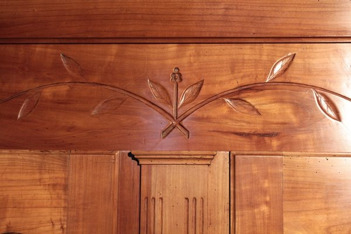

Muy usada para decoración, muebles y ebanistería, así como en piezas ornamentales. Debido a ser una madera fácil de manipular, se usa en trabajos de talla, torneados o muebles curvos. Pero no solo es usada en muebles, escaleras, puertas, ventanas, revestimientos, tarimas o suelos son otros de los usos de esta madera.
